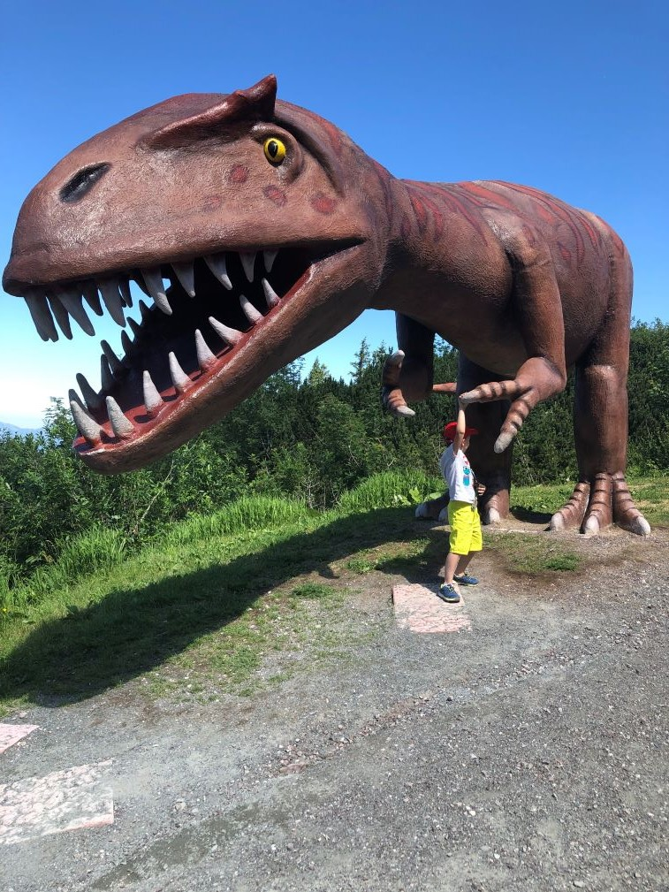

Žiju v Českých Budějovicích. Promoval jsem na Jihočeské Univerzitě v Českých Budějovicích v oboru ekonomika.
V současné době pracuji ve veřejné správě jako zástupce ředitele krajského úřadu pro oblast školství, sociálních věcí, zemědělství a ochrany ŽP, kultury a kybernetické bezpečnosti.
V předchozí pozici jsem měl na starosti rozvoj Jihočeského kraje.
Mezi mé koníčky patří rodina a cestování s ní, myslivost jako součást rodinné tradice a Forumule 1, kde fandím týmu Scuderia Ferrari.
Fotky z cest

Cestování s dětmi není jednoduché a obzvláště s dvojčaty (vše potřebujete minimálně dvakrát, i taková odrážedla). Je potřeba vše mít perfektně naplánované,
aby se nenudily a pořád musí být nějaká zábava. Nejlepší jsou fyzické aktivity proložené poznáváním nových věcí. Také je potřeba najít dostupné lokality,
protože otázky kdy tam budeme, jsou při cestování stálicí.
Rakousko považujeme za ideální lokalitu, kde najdete dokonalý mix krásné přírody, poznávacích aktivit, skvělého jídla a hlavně velmi přátelských lidí.
Zde jsou obrázky z Triassic park perfektního místa pro všechny, jejichž děti (a nejen ony) mají dinosauří období a
chtějí se dozvědět spoustu zajímavostí.
Jak mne můžete kontaktovat
Protože naše životy skutečně žijeme a nesledujeme a neprezentujeme je přes obrazovku, tak nemám aktivní profily na sociálních sítích, kromě LinkedIn, kde najdete veškeré
profesní informace.


.png)